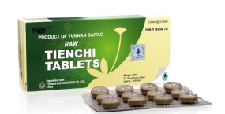
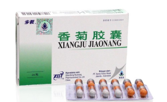
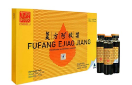
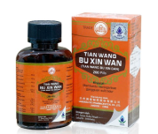
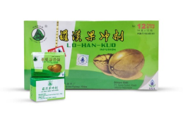

Raw Tienchi Tablets

Sisa Stock 27 membantu melancarkan sirkulasi darah, menjaga kesehatan jantung, menormalkan tekanan darah, mengurangi kadar lemak darah (kolesterol) tinggi, serta menghentikan rasa nyeri dan pendarahan dalam akibat cedera. |
Pil Po Chai.png)
Sisa Stock 19 efektif memadatkan feses, mengurangi mual dan muntah, asam lambung, perut kembung karena masuk angin dan masalah pencernaan lainnya. |
Buchang Xiangju Jiaonang

Sisa Stock 18 Memiliki efek analgesik, antivirus, serta anti-inflamasi yang bekerja dengan menghambat perkembangan bakteri, virus, maupun jamur pada rongga sinus. |
Fufang Ejiao Jiang

Sisa Stock 6 mempercepat pemulihan setelah sakit demam berdarah, baik digunakan pasien kemoterapi untuk membantu meningkatkan daya tahan tubuh, serta cocok digunakan wanita untuk melancarkan darah haid yang tidak teratur. |
Tian Wang Bu Xin Wan

Sisa Stock 9 Melancarkan sirkulasi darah, menyehatkan fungsi ginjal, dan membantu menenangkan pikiran. Cocok untuk yang mengalami gangguan kesehatan seperti insomnia, jantung berdebar, pelupa dan gelisah. |
Lo Han Kuo

Sisa Stock 24 Mengatasi panas dalam, sariawan, meredakan batuk, sakit/ radang tenggorokan, membantu menghilangkan dahak, hingga menguatkan paru-paru. |